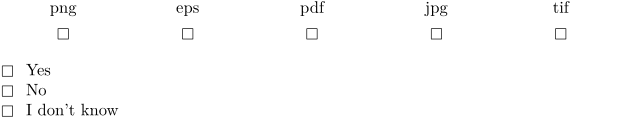
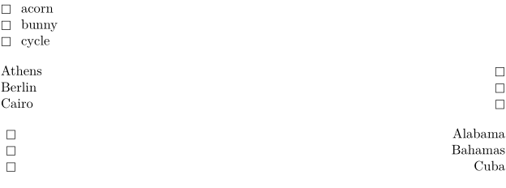
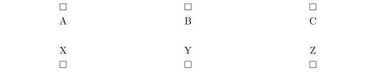
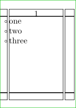
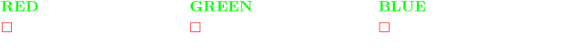

Contents
Summary
The command
\items
creates a short list of items
Settings
| \items[...=...,...]{...} | |
| ...=...,... | inherits from \setupitems |
| {...} | text |
| Option | Explanation |
|---|---|
| text | this is a comma-separated list of values |
Description
This command gives a list of items with a symbol next to each one (actually the symbol it can be to the left, on top or below each item), meant for questionnaires.
You can also use \startitemize with \ran and \its.
Examples
Example 1
-
\setupitems[symbol=8] \items[n=5,width=\hsize,alternative=bottom]{png,eps,pdf,jpg,tif} \blank \items[n=3,alternative=left]{Yes,No,I don’t know}
Gives:
- 
Alignment alternatives
-
\setupitems[symbol=8] \items[alternative=left]{acorn,bunny,cycle} \items[alternative=right]{Athens,Berlin,Cairo} \items[alternative=left,align=middle,textalign=flushright,distance=1em]{Alabama,Bahamas,Cuba}
- 
Alignment top/bottom
-
\setupitems[symbol=8] \items[alternative=top]{A,B,C} \items[alternative=bottom]{X,Y,Z}
- 
Symbols in margin
-
\setuppapersize[A10] \showframe \starttext \items[alternative=inmargin]{one,two,three} \stoptext
- 
Styling
-
\items[symbol=8,alternative=bottom,align=flushleft,textstyle=bold,color=red,textcolor=green]{RED,GREEN,BLUE}
- 